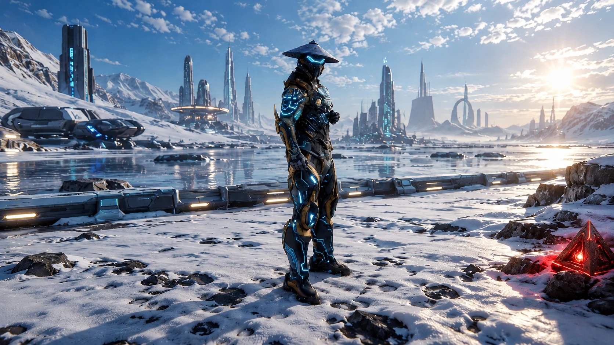
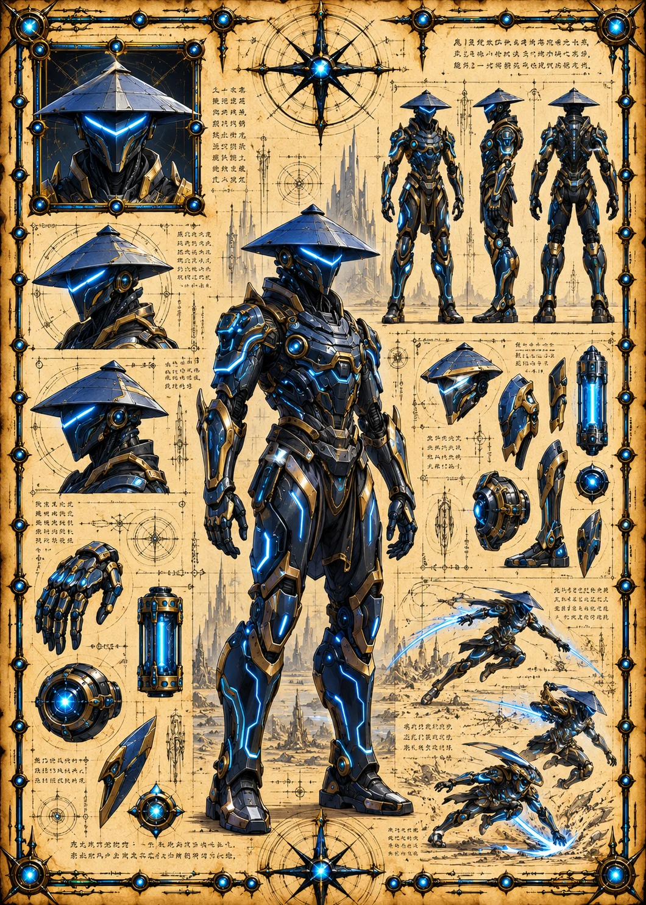

Field Observation
Unuro discovers a red alien pyramid positioned near the lower-right rail bed. The pyramid may anchor alien activity within Earth 1 transport infrastructure.
 ©
©
GENEZYS ARCHIVE · EARTH 1 · Legionnaire
Bond Revolver
Identity & combat record
Archive node 01 / 05
Archive record
Unuro is the living proof of the Honor Warden's creed: no bond breaks. The Spirit Walk reaches across the veil and brings a fallen ally back, if only for a moment, to strike once more. Unuro's bond-stone is cracked, and nobody has ever dared to ask why.
Combat signature
Phases through ethereal dimension: Revenges dead ally - brings him back immediately for 1 turn to use a special attack.
Genezys 05:08 ™&©2026LEGIONS
Recovered visual record
Archive node 02 / 05

Full frame available // rotate device to landscape
Technical archive
Archive node 03 / 05

Classified field intelligence
Archive node 04 / 05
FIELD REPORT // ARTIFACT DISCOVERY
Field Observation
Unuro discovers a red alien pyramid positioned near the lower-right rail bed. The pyramid may anchor alien activity within Earth 1 transport infrastructure.
Environment
Object Analysis
Key Findings
Motion archive
Archive node 05 / 05
Motion record not yet recovered